Each little interaction in B-to-B marketing is a promise that the company makes to the prospective buyer. Every promise that is fulfilled builds trust with an individual and across an organization.
The role of marketing in B-to-B is to build incremental trust ahead of and during a sales cycle by keeping promises:
The snippet in the search results is a promise that your product (or podcast, or blog post) will help the buyer answer the problem that initiated the search.
The email notification that you published a new blog post is a promise that reading will be worth the buyer’s time.
The copy on a webinar landing page is a promise that the buyer will learn something worth sacrificing an hour of their time.
The individual fields in your request a demo form are promises that you will use that information to give the buyer a better demo.
The role of testing is to make sure that you are making the right promises. Testing anything less ambitious is setting your B-to-B program up for failure. Failure is a big danger since all you need to do is follow the best-practice advice of ecommerce conversion rate optimization.
The design of your test program will make the difference between success and failure with A/B testing. But the testing role in B-to-B shouldn’t be limited to A/B testing in the browser. Qualitative feedback and strategic A/B testing are tactics that can multiply the impact of your B-to-B testing program.
A/B Testing
A/B testing in B-to-B environments is a challenge:
You have lower traffic so it takes longer to get a significant result.
The final conversion doesn’t happen on your website.
The final conversion occurs several months after the first interaction with your website so it is hard to tell whether a conversion early in the buyer’s journey has an effect on later sales.
You can have several people involved in the final conversion who interact with online and offline sales and marketing in a variety of ways.
Despite these many challenges you can build a testing program that uses A/B testing to powerful effect through good program design.
Simplicity
You will have to compensate for the complexity of your conversion with simplicity in your testing program.
The first rule for B-to-B testing is to stick to A/B testing. Multivariate testing looks awesome in theory, but it will take 20 years to get a significant result at B-to-B traffic level.
Even when you get a significant result, you are still just testing for the conversion that you can see rather than the actual revenue conversion.
Keep it simple and get quick results so you can book improvements and launch new tests soon after.
Test Your Fundamental Assumptions About the Customer
Testing the fundamentals is an important corollary to keeping your testing program simple.
The button-color warriors of ecommerce testing can get away with testing every minute detail because tiny lifts in conversion can result in immediate lifts in revenue that have a material impact.
In B-to-B testing, it will take 10 years to get a significant result if you’re going after 0.2 percent lift. The obvious solution to this problem is to test the big stuff.
Are your prospects better motivated by avoiding pain? Or by the recognition they’ll get if your solution makes them a success?
Are your prospects better motivated by the contents of the webinar? Or the outcomes of the webinar?
Test your underlying assumptions and target gains of 20 percent, 50 percent, or more. And, in doing so, you should expect significant results in about a month.
You will know that you are doing this right if you are learning lessons about your customers that don’t just help you convert them at each micro-conversion of the buying journey, but also help you better communicate with the buyer throughout the journey.
Collect Assumptions
In order to challenge your assumptions, you’re going to need to know what those assumptions were.
An outsider’s perspective is valuable because the outsider can challenge assumptions that the people involved in producing an individual piece of marketing collateral may have missed.
However, as an outsider you’ll very quickly find the patterns that give big gains when you test. By all means keep testing these patterns, but your testing program will stagnate if you rely on just the patterns that you know work well.
The individuals involved in the original production should also have a deep understanding of what thoughts, disagreements, and compromises went in to the content. These people too are a valuable source of assumptions that you can test.
If you are the outsider running tests, then you want the whole sales and marketing team to know that you want to test assumptions and you should make it easy for them to communicate what assumptions and compromises that they made to complete the content.
Choosing What Assumptions to Test First
With feedback coming from throughout the marketing department, you’ll want a fair and transparent way to set priorities. Anything less and you run the risk of turning others off of your testing program and losing their contributions.
While you can’t A/B test easily against sales, you can test against each promise—each micro-conversion. And with clear funnel definitions, you can use historical data to calculate the value of each micro-conversion.
With the value of a micro-conversion, a testable hypothesis, a little bit of analytics data, and an estimate for the lift you expect from the test, you can do a quick pro-forma analysis to calculate the expected revenue impact of each test.
While this can be manipulated by biasing your estimates, even a flawed, good-faith estimating process can help you pick the best tests first while giving others transparency into the testing process.
Share Your Lessons
The goal of a B-to-B testing program should be to better understand your buyers rather than just improving conversion rates.
You need to test assumptions in order to get results that are big enough that your tests achieve an acceptable sample size in a reasonable amount of time. But you should also be making valuable discoveries about your buyers.
A B-level testing program helps the testers better understand your buyers. An A-level testing program helps the entire team better understand your buyers.
Using the whole team to source test ideas can help get the team invested in your testing program. Sharing the lessons learned from your best tests both serves to show the value of their feedback, but also helps deepen the team’s understanding of your buyers.
Micro-Conversions
Each promise in the buyer’s journey is a micro-conversion and each micro-conversion can be tested.
Any decently valuable solution that you sell is going to be costly and the buying decision is going to be complex. You don’t want to wait for a nine-month buying cycle to come to the end before evaluating your first tests.
That’s why you need to test against micro-conversions and optimize against each step in the path.
You can’t take the results of these tests to your CFO, say “webinar sign-ups are up by 30 percent,” and expect to get a big bump in the marketing budget. But you can turn around tests a lot more quickly.
The results of these tests may be a little dubious since they aren’t tested against revenue, but they will let you complete more tests and make more micro-improvements up the funnel that will cumulatively be better than waiting for the bottom-line results.
You won’t know whether each test increases sales when you get your initial results, but you can run a retrospective analysis after a couple of sales cycles to check whether micro-conversions are having the expected impact.
The Funnel
One key to a strengthening your testing program is to have a well-defined funnel that reflects how buyers develop into customers. The funnel will help you estimate and measure the impact of each test.
Estimating the value of a conversion is a challenge when each conversion lives in isolation. In reality, they are part of a system for building trust, educating the buyer, and making a sale.
By categorizing each conversion by funnel stage, you can more finely tune the values without expensive multi-touch conversion modelling.
Someone following you on Twitter or LinkedIn, or signing up for blog updates doesn’t have the same value as someone who has done all of those things and has started to learn about your product. And they have even less value than someone who is calculating the ROI of your solution.
By having a clear funnel, you can assign values to each stage in the funnel rather than each conversion. Assigning value to stages better reflects the actual value of a conversion compared with weighting all conversions equally and it takes alot less effort and expense than multi-touch.
With a strong funnel definition in place and a strong understanding of the value at each stage, you can better estimate the value of a test without much change to your marketing stack. Testing this way can also help you better understand and refine your funnel.
Retrospective Analysis
Running one test against bottom-line revenue takes too long to be worthwhile when compared against running lots of tests against micro-conversions. But that doesn’t mean that you can’t try to catch results that produce positive micro-conversions but negative revenue.
Once you’ve been running tests long enough to have prospects who’ve been through tested assets and turned into customers, you should look at your conversion data, calculate the expected revenue lift for the improved conversion rate, and compare that with the actual lift.
The data will be messy and you won’t catch every bad result.
But if you’re testing important assumptions, periodically looking at data will let you catch tests that badly underperform in terms of revenue. This in turn should give you ideas for what assumptions that need to be challenged.
Isolating Tests in B-to-B Testing Programs
If you’re testing assumptions, as I recommend, then you’re going to run into challenges isolating your test.
If you want to test, for example, different assumptions about why buyers sign up for webinars and all of your assets (ads, social media posts, calls to action, and landing page) support the initial assumption, then you can’t just run a test swapping out copy on the landing page.
Your challenge may be correct, but the promises you made to get the click to the landing page won’t align with the challenger version on the landing page. You’ll need to watch for this sort of co-dependency and then create alternate ads, social media posts, and CTAs that align with the message you are testing and send these alternates to the challenger landing page.
Not every test will suffer from this form of co-dependency, but you will need to watch for it.
Isolating tests is also important when dealing with tests on pages or resources that occur close together on the conversion path.
For example, you can’t test your home page messaging and your product page messaging at the same time since a significant proportion of your product page visits will pass through the home page. The results are co-dependant and running co-dependant tests together will mess up your sampling and results.
The A/B Testing Wall
If you follow the above outline for a testing program, you should have a steady source of good testing ideas but nothing is going to stop you from hitting a wall in your A/B testing program where results start coming slower and you find yourself with too much time between tests.
This is because early on in your testing program the opportunity is great. Increasing your conversion rate from three percent to six percent is much easier than six to 12.
At some point you will run close to the limits of optimization where the only way you can get big lifts in conversion rate is to confuse people who have no business converting. This is deadly where your conversions don’t result in immediate revenue and short-sighted under any circumstances.
Meanwhile, your best tests, in terms of quality, will still only give a lift of a few tenths of a percent and you’ll be back to six months plus to get a significant result.
If the team is learning about your buyers from your tests, then you can expect that new marketing assets will already start at a higher level than when you started the testing program so your new testing opportunities shouldn’t be as good as your original ones.
Additionally, each test can affect the results of another so you need to be careful about running too many tests at once.
If you want to test your home page’s ability to identify new opportunities, you can’t also test your product pages’ ability to convert those opportunities. The tests are co-dependant and should not be run in parallel.
As a result, you will find rapidly diminishing returns and a whole lot of free time as your A/B testing program matures. And, while you shouldn’t abandon A/B testing, you will make yourself dead weight on the team if you limit yourself to A/B testing in the browser.
Beyond A/B Testing
While A/B testing in a B-to-B setting can be valuable if done right, you will limit your results if you stick to the popular testing tools and built-in testing functions of your ad and marketing automation platforms.
Qualitative feedback and strategic A/B testing are two techniques that go beyond your standard testing tools. They can be the source of valuable lessons and results while extending the influence of testing beyond the browser.
Qualitative Feedback
B-to-B marketers are forced to make a lot of assumptions about their buyers.
We have tools like personas, case studies, and marketing funnels to help standardize lessons across the marketing team. We can use A/B testing or sit in on sales calls to challenge our assumptions, but there’s still a lot of guess work involved.
Qualitative feedback, a fancy term for listening, helps challenge those assumptions and get results faster than a stand-alone A/B test.
If you want to get a better understanding of what your buyers are thinking at various points in their journey, then you should contact them during their journey and listen.
The goals for qualitative feedback can vary from broad understanding, like what the buyer is thinking at different stages of the funnel, to narrow understanding, like what did they want from a specific webinar.
While the questions you ask will depend on your goals, the following survey questions are a good start for capturing what’s important to the buyer without taking too much time.
In addition, there’s a fourth question that you should be able to infer from these answers that you can use to evaluate your lead scoring.
- Are you in a buying cycle?
By recording the answer to this fourth question, you can evaluate whether your lead scoring is letting leads who should go to sales slip by and calculate the missed opportunity.
While there are tools that automate feedback, I think picking up the phone and calling leads who are in the midst of their buyer’s journey, asking the questions, and listening is worth the effort.
By using automated tools, like feedback popups embedded on your site, you are limiting the effectiveness of your survey.
You are biasing your responses to only those who are willing to fill out the form which will skew your data and hurt your analysis.
You are annoying your visitors.
Your responses will be more filtered as people edit their writing better than their speech.
You miss a chance to show that your company actually listens to buyers.
By calling and transcribing your calls, you can learn all sorts of important lessons and get feedback from a larger segment of buyers:
What kinds of language your buyers use to describe their problems.
Who else is involved in the buying decision.
What the buyer’s journey actually looks like rather than the idealized version of your marketing funnels.
Where your marketing falls short of meeting expectation.
Just doing two calls a day will give you 40 calls worth of information by the end of the month. With just 40 calls, you can start making better decisions about what goes on the homepage and product pages and what sorts of pages you should add to the site.
As your volume of calls grows, you can segment this information by industry, persona, and funnel stage to get an even more granular understanding of your buyers. Eventually you can use the feedback to feed natural language processing libraries to further deepen your understanding and turn qualitative insight into quantitative insight.
Qualitative feedback should be used to for test ideas, but don’t limit yourself to just informing your testing program. It should also help you better understand your buyers and make better decisions.
Finally, it should be used in place of testing where a testing is difficult and takes too long.
Testing the homepage against many competing internal and external priorities is a huge challenge.
You could, for example, create a homepage that greatly increases the number of blog subscribers. You could even calculate that this improvement will have a greater impact on revenue than a smaller improvement that increases the number of opportunities. But, in making the pure numbers-based decision you could very easily choke off opportunities and waste those subscriber gains.
Listening to feedback can help you make stronger decisions and can be a better alternative where A/B testing struggles.
A/B Testing Beyond the Browser
There’s one last form of testing that unequivocally belongs in a B-to-B testing program even if in a limited way.
You can test your strategic marketing mix by removing different tactics from in different regions and measuring the results after a couple of sales cycles.
Retargeting ads, for example, may look great because they touch every visitor before they become a customer. But do they have an impact? By definition they are shown to everyone who visits your site, or at least a specific page.
If you want to know whether you are just sinking your money into retargeting, you’ll have to pull retargeting from a test region and measure the results after a couple of sales cycles.
Field marketing, too, is another good candidate for this form of testing.
What you do is pick a region and cut a tactic off from that region for a few sales cycles and then analyze the effect of the tactic on number of deals, average deal value, and total number of deals compared with other regions that didn’t cut that tactic off as well as historical data from within that region.
This form of testing isn’t very challenging to implement and you will be testing things that help the CMO allocate budget and the CFO give more budget. You are somewhat limited in what you can test to marketing tactics that are wholly initiated by sales and marketing. A blog, for example, requires content that is initiated by marketing but also visitors who will find your blog independent of the region (and your control).
Testing at the strategic level will make your testing program more valuable to the organization in a way that executives can better appreciate.
The Testing Role in B-to-B Marketing
There’s still plenty that you can learn from the commonly-shared ecommerce testing best practices but testing in a B-to-B setting presents a host of different challenges and you need to understand these challenges in order to have a successful testing program.
Low traffic levels and long sales cycles limit the power of testing but that doesn’t mean it can’t be a powerful tool.
Structuring your test program around understanding your buyers will not only help you overcome those limits but also improve the overall effectiveness of marketing beyond just the testing role.
Clearly something is not quite right with me because, unlike the vast, normal majority of the world, I get excited un-sexy details like form fields. Over the years, I’ve developed a preferred data collection plan that balances the data requirements of sales and marketing, optimizing conversion rates, and the communication preferences of visitors.
This plan is the result of working with a number of companies that started out by collecting the information that the sales team wanted through marketing automation. It has evolved through a mix of testing and learning from colleagues over the years.
Evolving The “Sales Needs this Information” Approach
The sales-needs-this approach is how you end up with 16 different fields to fill out asking for information like revenue and number of employees.
I get that lead generation needs to support sales, but this approach looks backwards and dated from a contact’s perspective.
While marketing moves towards focusing on the users needs,the focus of the sales-needs-this approach is entirely on the needs of the company.
The Problems With This Approach
Here’s a dirty secret for you.
People don’t like filling out forms.
There are approximately 6 billion conversion rate optimization articles on the web and they all tell you to reduce the number of fields to improve conversion rate.
Many visitors hate forms so much that they will leave before they give you information.
Some people will be conflicted. They hate giving away information, but they really want what you have behind the form.
These people will give you bad information.
Some people just make mistakes.
And some people don’t know the annual revenue of their company.
User-sourced information is bad. And the sales-needs-this approach to data collection relies on user-sourced information.
Using user-sourced information to trigger and personalize marketing or sales automation is going to waste your users’ time and your sales reps’ time, as they make calls based on inaccurate information, and lower your conversion rates.
It can also lead you to think a chain of nurturing emails is performing poorly, when in fact it was a default selection on a form that visitors can’t be bothered to change is sending people into an inappropriate nurturing chain.
You also run into data consistency problems. People spell their companies differently. Some add a period to the end of “inc.” Some don’t. And some leave “inc” off entirely.
Data consistency is a huge obstacle to benefiting from automation. Little differences in user-sourced information have a big impact.
In Defense of This Approach
If sales won’t talk to a lead then it’s not really a conversion that matters to the business.
An offer with a 12 percent lead conversion rate (lead being someone in your marketing database but not passed sales) isn’t necessarily better than an 8 percent marketing qualified lead (MQL) conversion rate (MQL being someone who gets passed to sales).
Any decent CRO professional understands this, but usually they write about ecommerce which is much less messy than B2B lead gen.
That’s also not to say that the 8 percent MQL is definitely better. Maybe asking for too much, too soon qualifies leads before they are ready and wastes sales’ time.
Or maybe you’ve got a great funnel set up that converts really well and speeds up sales cycles.
But without all of this messy context, I’ll take a lower lead conversion rate if it increases MQLs any day.
The Better Way
You can get the data that your sales team wants without making them do their own research or asking twenty questions before letting people read your white paper.
There are dozens of data services that will get you company information with only an email address.
Salesforce has Data.com. I currently use FullContact in Gmail. HubSpot CRM enriches contacts automatically for their users. There are a bunch more and they are quite reasonably priced when you weigh the advantages you’ll get from reduced data entry, improved conversion rates, and better data consistency and accuracy.
Data from these services isn’t perfect. You should definitely experiment to see which one best serves your market.
But we’ve already established that asking users for information also results in data that is wrong.
The degree to which of user-sourced or service-sourced data is better is something that you will have to decide for yourself.
With service-sourced data you can drop all of the form fields except email and get names and company info from the service, or from email signatures.
If contacts with no data is a big enough problem, you can use progressive profiling to capture that information from contacts later on while limiting the number of fields required by contacts that do match.
User-sourced data only wins in data coverage. You will get everything that you want by making every piece of data that you want mandatory.
Everything else is either a toss-up (accuracy) or a clear advantage for service-sourced data (effect on conversion rate and consistency).
|
User-Sourced |
Service-Sourced |
| Accuracy |
Poor-Decent |
Poor-Decent |
| Coverage |
Complete |
Decent-Good |
| Effect on Conversions |
Bad-Very Bad |
Good-Excellent |
| Consistency |
Very Bad |
Excellent |
The Webmail Conundrum
But wait, Damon, what about Yahoo! and Gmail addresses?
There are plenty of multi-million dollar businesses out there running through Gmail addresses. Unless you only sell to Fortune 500, you will miss out on good business if you don’t do anything about them.
This, however, is a problem that can be solved using automation.
- You can swap out forms for webmail contacts and profile them as you would have if you weren’t using a data service.
- Or you can send an automated email inviting them to schedule a demo with sales. They may not qualify by your standard metrics, but you’re giving them an extra chance to identify themselves.
- Or you can modify your lead scoring to ensure that these people don’t slip through.
There are lots of ways to solve this problem while still getting the benefits of asking for less information from the majority of your contacts.
Quick Hit Tactics
We’ve walked through a big picture look at balancing the needs of sales with the wishes of prospects and come with a technological solution. But there are still some important tactical details left to consider before the complete data plan comes together.
Don’t Be Afraid to Ask Directly
I’ve just got through a whole long section telling you not to ask for the information that you want and now I’m telling you to do the opposite.
However, we’re not concerned here with information about the company that can be easily found elsewhere, but rather information about how the contact’s needs intersect with the company. We want to know if they are ready to buy and we want to be direct about it.
- Are you buying?
- How long before you buy?
- Do you want to talk to sales?
I suspect that having complicated lead scoring available biases people towards complicated solutions while over-looking the obvious.
Most people have seen enough lead forms that they know what’s going on when you start asking for all sorts of company information so don’t make it seem like they are being tricked.
Asking direct questions like these helps keep everyone’s motivations in the open and paves the way for a long partnership.
Also, people who aren’t interested in talking to sales will be more likely to convert when they have a clear way of signalling that they don’t want a conversation. It’s not an immediate win. But it could be the start of a long-term relationship that may result in business.
Ask Questions Focused on Helping the Contact
Imagine these two questions are paired with identical select boxes asking contacts to choose from a list of roles.
- What is your role in the company?
- Would you like product information tailored to your role?
Which question would you prefer answering?
The first question is clearly focused on the company’s needs.
The second is more focused on the contact’s needs. Both sides get something out of this interaction. Transaction—tailored product information is an admittedly self-serving way of giving, but it’s still way ahead of the first question.
The second question might not be as good for segmenting contacts precisely how your sales and marketing team would like because
- some people will not ask for extra information and
- others will want to select several roles.
However, the difference between these two questions is the difference between saying you are customer focused and actually being customer focused.
Not wanting extra information about your product or service is a useful signal.
Wanting information for several roles is a signal that you could have a champion at the company. Again, very worthwhile.
Asking questions that focus on the contact’s needs is simply about aligning the offer with the information that you require to access it.
Another common example worth copying is what is your biggest challenge related to x-style questions. The x here is the topic of your downloadable resource or closely related to the topic. This style of question will help the sales person focus on the needs of the contact and reassure the contact that you are focused on their needs.
Everybody wins.
Assembling these Tactics into a Plan
And now we’re ready to assemble all of these pieces into a coherent plan for collecting and using contact data that we can use to guide our sales and marketing automation efforts and inform our technology needs.
Each business has their own particular needs that will require some adjustment and tool restrictions sometimes require additional allowances. Caret Juice customers should expect to recognize the following plan as the starting point for our marketing automation work.
- Company information will be filled in through third party tools.
- Except for email addresses, we will only ask for information that is focused on helping us understand and address a contact’s challenges thereby aligning our needs with theirs. This includes giving contacts a way to signal that they need help buying.
- We will only break the second rule if we can’t get the information we need following the first rule.
All of our form field, progressive profiling, data tool and integration requirements follow from these three rules.
Be sure to sign up for updates from Caret Juice to catch the next post on how to use lists to structure enterprise HubSpot installations where you will learn how HubSpot lists and forms fit together to support the execution of this data strategy (and make managing a complex HubSpot installation easy).
Self-driving cars promise to re-imagine the relationship between cities, people and transportation while Uber takes fat chunks out of the taxi industry.
Newspapers struggle with relevance—the value of ad space having plummeted as the expense of publishing dropped to near zero.
Investors stand strong behind a company like Amazon while years of losses stretch into decades out of hope that it will one day turn its status as the default place where people go to buy online into an avalanche of profits that bury past losses.
Technology is changing the business landscape quickly. But it isn’t just threatening old business models.
New technology also brings new automation opportunities letting you and your colleagues get more done in less time.
The Constellation Approach to Business Technology helps you understand business applications, how they relate to each other, and choose the best combination of technologies to balance growth, flexibility, and costs.
How Business Applications Have Changed in the Last 15+ Years
Until around the start of the new millennium, data stayed primarily within the business application. You’ve been able to integrate enterprise and legacy apps, but integration was time-consuming and expensive.
As cloud computing grew in popularity and developing business software became cheaper, stand-alone applications focusing on solving increasingly niche problems flourished. Application programming interfaces (APIs) that let developers integrate apps became more common and then expected. APIs also started to become more consistent and easier to use alongside this explosion of options.
The leading cloud applications in each category started using their APIs to build native integrations with each other. These integrations are at the point now where native integrations between the leading products in different software categories compete with and even exceed fully integrated suites.
Upstart and niche cloud products emerged to solve increasingly specific problems.
Typically these smaller products would be less expensive than the leading cloud options, and needed to integrate with the leaders in other applications categories in order to compete.
Soon a variety of middleware applications would spring up giving you more integration options than native and custom integrations created by the respective product teams and their customers.
Some of these middleware applications provided deep, powerful integrations between few products, like exporting Salesforce data to Excel and back.
Others gave lots of shallow integrations between lots of different applications letting you trigger actions in one app from another or copying one field from one system to another.
|
Enterprise Suite
|
Cloud Niche/Upstart
|
Cloud Leader
|
| service partners build custom integrations |
develop own integrations |
attract powerful integrations |
| costly to integrate |
moderately costly to integrate |
low cost to integrate |
| costly to license |
inexpensive to license |
moderately costly to license |
Shallow Integration Middleware
shallow integration between many applications |
Deep Integration Middleware
deep integration between a small number of applications |
This explosion of stand-alone, SaaS business applications, with multiple layers of integration options, gives you more varied options towards solving a wider variety of challenges and unprecedented flexibility to manage the flow of information through your business.
Where before you had to get an expensive piece of software that would require extensive configuration and customization before you could start using it effectively, now you can probably find a solution that will work for you almost immediately and at a lower cost.
The Hidden Cost of Cheap
Individual products and integrations are straightforward. The full web of products and integrations is incredibly complex.
The overall cost of one or two low-cost, poorly integrated applications is negligible. Particularly if the applications solve an important business problem. Licensing and maintenance costs are practically non-existent in this situation.
The costs of poorly integrated applications grow exponentially as their number increase. Licensing is still inexpensive, but niche products attract fewer integrations. And having substandard integration options imposes a substantial tax on productivity across the company. That tax increases with each application you add.
The productivity tax is paid in the following ways:
- time spent on duplicate data entry
- poor decisions caused by poor data due to
- data entry errors, and
- missing data
- lost opportunity because highly specialized tools only integrate with the strongest platforms
- increased effort to perform what are basic tasks on stronger platforms.
While the cost each little example of duplicate data entry or handicapped decision making is negligible, they add up and quickly dwarf the licensing costs.
Low-cost, niche products have their place in small businesses and solving niche problems in large ones. But their hidden costs are crippling the larger the business and more complex the technology stack.
Platforms and Solutions
If you’re not buying technology to solve a problem, then you are doing it wrong.
When looking at an application, more features does not make a product better. In most cases, when you see a CRM that also does marketing automation, or a marketing automation suite that also has a content management system, or whatever other app that does something and something else, then the something else is almost always a very light version of an equivalent stand-alone app.
It pays to be clear on what you are trying to accomplish with the software. Features are meaningless next to a great solution.
When looking at business applications be aware of whether you need them to be a platform (and solution) or just a solution.
Platforms are the core applications that you build off. They need to accommodate a variety of solutions as the company grows and they need to integrate readily with your other platforms.
Niche products are often great solutions but lousy platforms because of the limited number of native integration options of a niche product. Your solutions need to integrate with one of your platforms, but any data that needs to go from solution to a non-integrated platform can usually get passed through via the one integrated platform.
You don’t need extensive integration on a solution. Just one solid integration with a platform.
Solutions are also great candidates for taking risky bets on new technologies because they sit at the edge of your network of applications and cause minimal disruption to your business. The cost of switching from one experimental solution to another is low if you have a good platform.
This lets you outsource the risks of staying ahead of technology trends in your industry to venture capital firms while still reaping the benefits of cutting edge software technology investments.
Once you start building on a platform, however, it is very difficult to switch. Each solution that you integrate with a platform is another requirement that will complicate purchasing, migrating and training if you ever grow out of the platform.
Expose Your Data
The most agile platforms for your business data, whether they be CRM, support, accounting software or even ERP, are the ones that best expose your data.
New technologies like big data and machine learning are creating new opportunities every day. Marketing and finance are getting most of the love from new technologies right now with applications that do things like identify the best prospects or the biggest financial risks.
Soon retailers will be able to do things like plug their point of sale and inventory data into a cloud app that will pull in weather data and forecast umbrella demand while adjusting the retail price to maximize revenue in real time.
Niche Big Data solutions like weather-based inventory forecasts are multiplying quickly. Businesses don’t need a data scientist to benefit from the Big Data revolution—they just need to keep their data in platforms that attract lots of integrations.
The Constellation Approach to Business Technology
The Constellation Approach to Business Technology is meant as a way of understanding how your business applications relate to each other and what you need them to do so that you maximize flexibility, and minimize expenses without restricting growth.
In order to apply this approach to your business, you need to do the following.
- Identify platform categories (CRM, marketing automation, accounting) based on how you want to grow.
- Identify niche solutions that will contribute to your growth.
- Research integration options.
- Choose the combination of platforms, solutions and integrations that best balance cost, simplicity, flexibility, and future growth.
Everything in the Constellation Approach flows from understand which applications need to be platforms and then grows from there. The right platform both grows with you and gives you the best chance to take advantage of yet unimagined technologies just beyond the horizon.
Innovation presents the greatest risks and rewards. A good platform will let you take advantage of innovative solutions while reducing the costs of switching or abandoning a solution.
Twitter lists are a feature that nearly every digital marketer has experimented with but few use for anything other than keeping track of a select group of influencers.
Lists seem like they would be quite useful to sales reps and account managers trying to build relationships with prospects and accounts. In practice, this isn’t true.
The percentage of people actively using Twitter is quite low. I would guess that perhaps 90 percent of prospects or accounts for most businesses won’t be using Twitter actively which makes for a lot of wasted time maintaining targeted lists.
However with a little automation, Twitter lists can be a practical, everyday tool for sales reps and account managers. The automation handles the basic maintenance letting your people focus on building relationships.
Create the Twitter Lists
The first thing you’re going to need to do is create empty Twitter lists to hold customer and prospect info.
If you want to create separate lists for each sales person or account manager, then you will have to create a separate list for each (ie. Damon’s Prospects as opposed to just Prospects).
To create the lists, log in to Twitter and open the Profile and Settings menu hidden under your Twitter icon at the top right of the web interface and select Lists.
Then create as many lists as necessary.
Prepare Your CRM
In order to simplify later configuration and reduce the amount of redundant work that Zapier will do, we’re going to want to store the Twitter handle in CRM.
If you don’t already have one, create a Twitter Handle field in your CRM.
Set Up the Zapier Integration
We’re going to use Zapier to pull prospect and customer info from CRM, enhance that information with social media account information from FullContact which we will return to CRM before adding any Twitter accounts found by FullContact to the appropriate list.
Create a new Zap that triggers whenever you add a New Contact to your CRM.
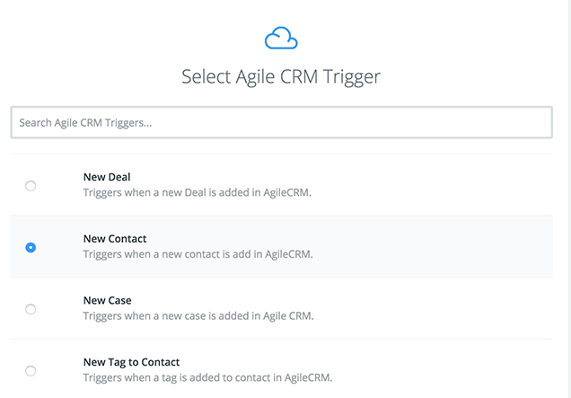
Next, create a Filter that checks that the CRM email field exists.
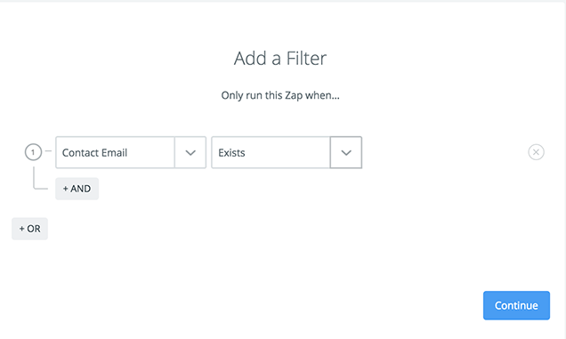
Select FullContact for your action, connecting your FullContact account to Zapier if necessary, and choose Find a Person.
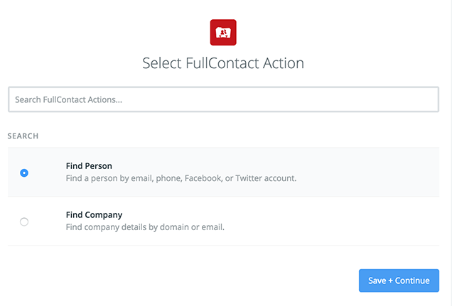
Click Save + Continue, test the step and then connect your CRM email and phone number, if you like, to FullContact.
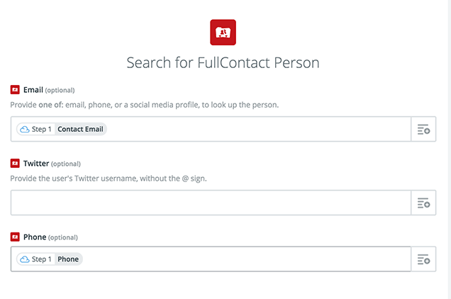
Test the step again.
Note that the test will tell you whether the step was a success or not. If you get a success message but check the data returned it will be for the wrong record. That is okay. It is just a quirk of the FullContact-Zapier integration.
This is all that we need for this Zap. However, there are a lot of potentially useful additions to this Zap that are detailed in the optional selection at the end of this post.
Automate Twitter List Creation
A lot of CRM systems are limited to triggering Zapier when a contact is created and not when it is updated.
This means that, for many CRM systems, we can’t just check if FullContact found a Twitter handle, send the handle to CRM and trigger a new series of Zaps to add contacts with Twitter handles to the appropriate list.
I cover this topic in more depth in my post titled Creative On Update Zapier Triggers, but basically what you will need to do is set your CRM up to create a new tag or a new note when the Twitter Handle field we created in the CRM gets filled out and then watch for that tag to trigger the list creation Zaps.
The specifics vary by CRM. This is what I did for Agile CRM and then set up a trigger to run this daily since I don’t have an update trigger in CRM.
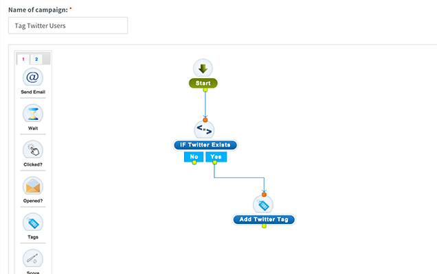
Moving back to Zapier, we’re going to watch for this tag, or note or whatever you needed to create to trigger the Zap, and then filter contacts by Owner to get prospects in the right list.
The specifics of the trigger will depend on whether you can trigger on update or have to use a workaround and, if you used a workaround, on what workaround you used.
For me, I triggered the Zap from Agile CRM using the New Tag to Contact trigger with a Tag Name of Twitter matching the tag I’m automatically creating in CRM.
Once you have your trigger set up, add a (Text) Exactly matches Filter on the owner email field from CRM using the email address of the sales or account rep.
You may also want to filter by the status or funnel stage, however, if everyone is using CRM properly and is setting the owner of the contact, then you probably won’t need a status or funnel stage filter as we’ll be matching against the owner’s email.
Finally, create a Twitter Add User to List action.
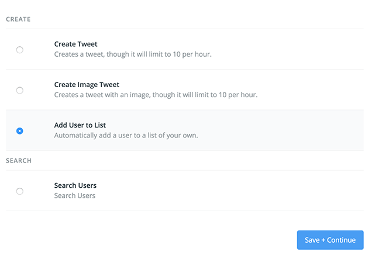
Save and connect your Twitter account.
Select the Twitter list that you created and map the Twitter handle from your CRM to Zapier.
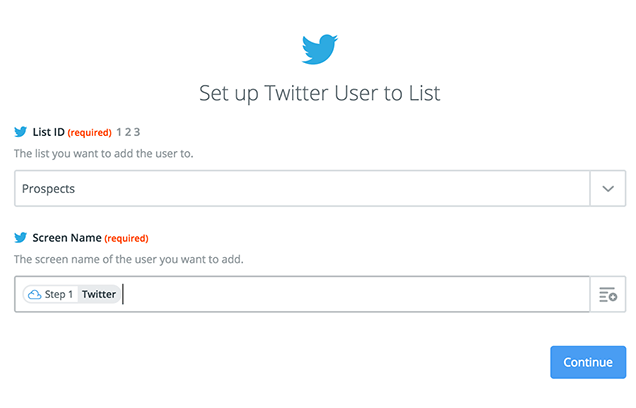
Now you need to repeat this last series of steps for each sales or account rep for whom you’re creating Twitter lists.
Drawbacks
The one possible drawback of this automation is that there isn’t an easy way to remove people from lists. Zapier simply doesn’t have a Remove from List option even though Twitter’s API supports it.
Some salespeople are happy to maintain a relationship after the sale and are fine with their list of prospects including former prospects that they’ve already either won or lost. But others would like that sort of thing cleaned up.
This is less of an issue for account managers because accounts don’t normally churn as fast as sales prospects qualify or disqualify, but it is still a problem with no easy automated solution.
When you capture information online there is always a balance between asking for more information and making it as easy as possible for your visitors to complete their task.
You want more information to help you decide what to do with the person but you also want to maximize the number of people who give you their contact information.
In a B2B context, email addresses are king. Every form has an email field. But everything else is up for debate particularly when you need more information to qualify whether it is worth having a sales rep contact the lead.
There is a lot that you can do with just the email address particularly if you get the email domain from the address.
Internal Notifications
Extracting the email domain from your contacts lets you trigger a number of useful internal notifications when working complex sales with long sales cycles.
If you’re selling high-priced (and hopefully high-value) items to other businesses, then often there will be several people included in the decision to buy. These sales usually take a long time. I’ve seen sales reps working an account for years before finally closing a sale.
Notifying sales reps when a new contact from one of their accounts starts interacting with your marketing materials can be of great value.
It can mean that a good prospect that wasn’t ready several years ago is now in the market.
Or, if they are already in a sales cycle, it can tell the sales rep who are some of the other decision makers who will be involved in the purchase. They can then do more research seeing what sorts of content they read on the site and learn more about the individual online.
We can trigger these notifications by matching email domains.
Lead Scoring
Another way that you can use email domain is in scoring leads that your sales team hasn’t spoken to before.
Again, presuming you’re working a complex sale with long sales cycles, seeing multiple contacts from the same email domain is a good signal that the company associated with that domain is in the market.
Matching multiple email domains over the space of a few months should give leads a big boost to their lead score and trigger a follow up from the sales team.
Collecting Pre-Sales Data
The email domain is also useful for collecting pre-sales data from other databases like Salesforce’s data.com, Dun and Bradstreet or LinkedIn.
Using the company name is unreliable when you’re tying to match different data sources.
You can have separate legal names, trade names and DBAs (doing business as).
Sometimes people include the designations like Ltd. and LLC at the end of the name, but other people often leave them out.
You even have problems with adding or leaving off the period in Ltd. or using abbreviations versus spelling out Limited.
You can have the same company name used by different companies in different parts of the world.
Sometimes people even make typos.
And finally, you can have conglomerates of multiple companies each with their own name.
If you’ve got a verified email address, then you have a unique identifier for the individual and for the company that owns that domain.
You can use the domain to more reliably get data about the company than you can a company name typed in to an online form.
One problem with using the domain is that you can have multiple domains for a company. Or different domains for different departments or regions.
The LinkedIn API helps with this challenge. It associates multiple domains with each company. You can use the API to look up company data by domain and find other domains associated with the company and then match against all of the domains.
Salesforce only lets you look up by website and email domains are often different from website domains and you won’t capture the full range of email domains associated with a particular company.
Once you connect with a data source, you can pull all sorts of information like the name, number of employees, revenue (if they are public) and all sorts of location data.
Regardless of data source, using the email domain to look up additional information from third party databases is an advanced use and should only be done by an experienced developer.
Marketing Automation
All of these uses for email domain assume that you have a complex sale and that you are using marketing automation and CRM. Some of the set up is best done in your marketing automation system.
Filtering out Gmail, Yahoo and Live/Hotmail addresses is best done in your marketing automation system. Keeping a running list of email domains that you want to filter in the marketing automation system is easier than modifying the custom script that we’re going to use.
Similarly, triggering notifications and lead scoring is best done in the marketing automation system.
Because the specifics of each system vary a great deal, we won’t cover how exactly to set up the filtering, notifying, matching and scoring. These are the types of things that marketing automation systems do well so they shouldn’t be too difficult to set up.
Zapier
Extracting the email domain from an email address is usually a customization in marketing automation systems that is not so easy to set up.
Microsoft Dynamics CRM would require some scripting in Visual Basic that would only be useful for Dynamics users. Hubspot would require that you do an API integration and host your own code.
We’re going cover how to use Zapier to extract the email domain. This way, Zapier hosts your code and you can use these instructions with any Zapier-compatible system.
Zapier recently launched multi-step Zaps that make this workflow possible.
Create a new multi-step Zap that triggers when a New Contact is added to your marketing automation system (or CRM).
The first thing you need to do is create a field to keep the email domain in your system.
Specifics of how to do this depend on your system, but it shouldn’t be difficult. Name the field Email Domain.
In Zapier, create a new Zap and select New Contact as the trigger from your marketing automation/CRM system.
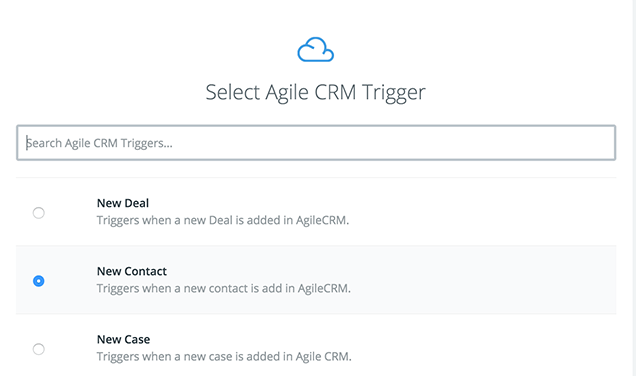
Test the step and check the contact information.
Next add a Filter that checks whether the new contact has an email address.
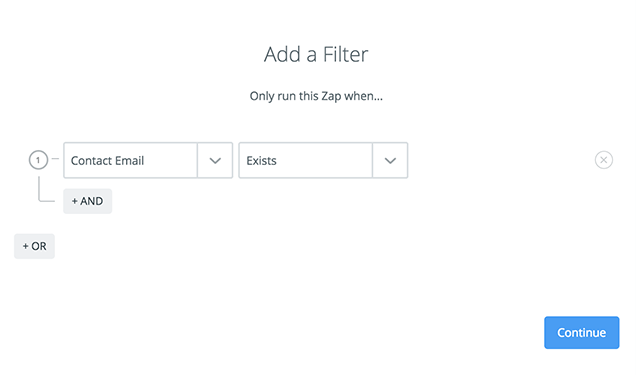
Now comes a little bit of code, but I promise that it will be quite painless.
Add a Code by Zapier action and select Run Python.
In the Input section of the Edit Template step, select the marketing automaion/CRM email field and name it email.
Be sure to keep the name lower case or else it will break the code in the next step.
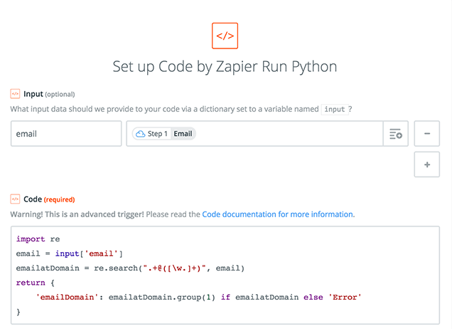
Enter the following code into the Code section.
import re
email = input['email']
emailatDomain = re.search(".+@([\w.]+)", email)
return {
'emailDomain': emailatDomain.group(1) if emailatDomain else 'Error'
}
For those of you with little knowledge of Python, here’s what’s going on.
Line 1: Import the regular expression module that will let us match patterns.
Line 2: Grab the input that we named email (and assigned to the email field from the marketing automation system) and make it a variable called email.
Line 3: Search for any combination of characters or symbols until you find an @ sign, then look for one or more upper or lower case letters, numbers and periods and create a group from whatever matches this last part of the pattern. Call the whole collection emailatDomain.
Line 4: Return the following for Zapier to use.
Line 5: Create emailDomain from the group of letters, numbers and periods after the @ sign if emailatDomain is set. Otherwise return the word Error.
Test the code against a recent contact.
Finally, we need to send the email domain back to your marketing automation or CRM system.
Create a new Update Contact type of Action for your marketing automation or CRM system.
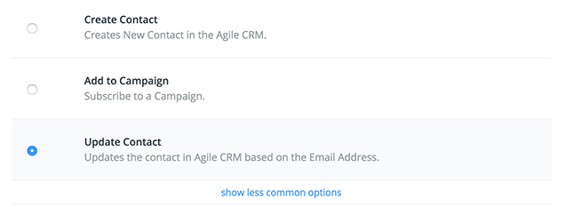
Match the email address of the contact against the email field from your system.
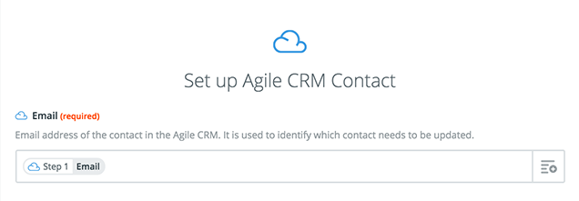
And then finally, scroll down to the Email Domain field that you created in your system and match the EmailDomain variable that you returned in your Code by Zapier script.
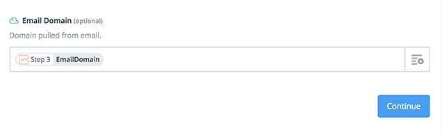
Now you should start getting email domains separated out from the email addresses for any new contacts that enter the system from now on.
You can start using the field in your chosen system to trigger notifications, score leads, or fetch additional information about the company.
Any business that develops a long relationship with their customers can and should automate feedback and review requests.
Good candidates include virtually any service business:
- IT outsourcing
- marketing agencies :)
- construction contractors
- hotels
- cleaning services
- software as a service
Basically, any business where you know the customer well enough to get their email.
Why would you want to automate feedback and reviews?
- You want feedback because you want to improve your business.
- You want online reviews because they strongly influence new business.
Automating feedback makes it consistent—automation doesn’t forget or get too busy. And by virtue of being consistent, the feedback becomes more useful as a key perfomance indicator letting you ask questions of the data.
- Are we doing better now than a year ago?
- Which departments are doing best?
- Which ones need help?
What we’re going to do is set up something called a Net Promoter Score (NPS) survey to start with. You can learn more about NPS surveys here.
Chaining your review process to your feedback process lets you filter your review requests before you make them. This lets you ask happy customers for reviews while dealing with unhappy ones through other channels (or at least learn from past mistakes to do better next time).
We want happy customers to share their experiences with the world. And emailing them a little nudge will help them cut out the many other distractions and get the review done.
The entire process in order of execution is as follows.
- Send feedback request from CRM and encode the recipient’s email address in the email so they can be identified later.
- Collect feedback in Typeform form.
- Send internal notifications from Typeform for unhappy customers.
- Trigger Zapier integration for happy customers to automatically send a follow-up review request from MailChimp.
- Trigger Zapier integration to return Typeform feedback to CRM for reporting purposes.
We can’t set things up in this order because we need to know where to point the email in step one and we need to create fields in Typeform, MailChimp and CRM before we can connect them with Zapier.
Create Feedback Form - Typeform
We’re going to use a service called Typeform in our examples because it creates beautiful forms, calculates your net promoter score for you, integrates widely so it can fit into our app constellation, and you can do a bunch of other cool stuff with it.
If you are already using a landing page tool like Unbounce or marketing automation platform like Hubspot or Marketo, feel free to create your feedback forms there. Or use Typeform anyway because it is awesome.
Hit the Create a Typeform and be sure to Save Your Account.
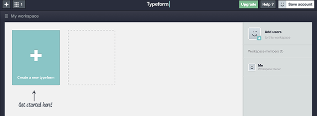
Then, with your account saved, select the Use a template option.
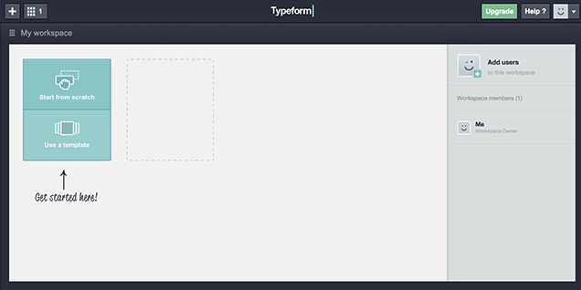
Scroll down the templates gallery and select Net Promoter Score and then Use this template.
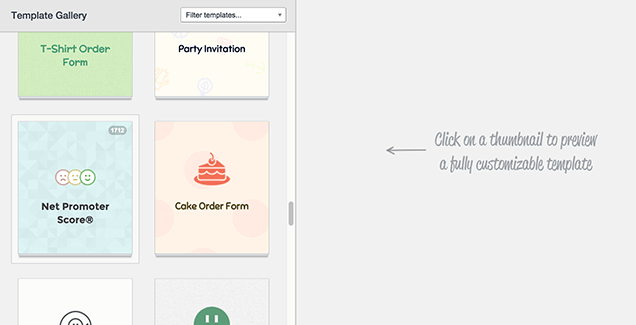
Typeform’s default net promoter score survey adds a bunch of demographic questions to the standard NPS survey.
While this information is undoubtedly useful to have, the beauty of NPS is simplicity. The main value comes from the first question which asks how likely the customer is to recommend you to a friend can be completed in ten seconds.
The second question asks, what was the reason for giving you a score. The extra effort required here makes the answers you get more valuable because whatever they write in this question is important enough that they care to take the time to tell you.
Consider the demographics questions optional. I feel segmenting the data by things like the service given to be more valuable than demographics. Keep or delete the demographics questions as you feel appropriate
Once you’ve decided what fields that you’re going to need, you will want to add a hidden email field to the form.
Select Hidden fields on, this will require an upgrade to Pro but you can start a free trial and follow along if you prefer.

In the Hidden fields dialog, type email and hit save. This will let us pass the email address from your CRM/project management system/booking management system to Typeform and tie responses back to the individual who filled out the survey.
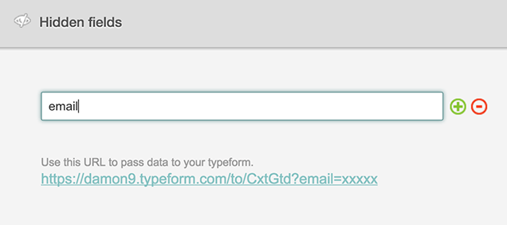
Make whichever design changes you like.
Set Up Internal Notifications
With the design set up, you can now set up an internal notification.
Under Typeform -> Configure, select Self notifications.
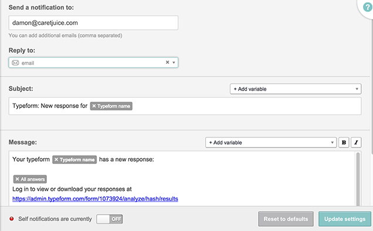
Under Send a notification to: enter the recipient(s) for the notifications. The email that you used to sign up will be there by default.
In Reply to: select the hidden email field that you added. This will let you reply to notifications and easily follow up with anyone who needs extra attention.
You can leave everything else blank.
Note that the Pro Trial lets you set all of this up, but it won’t work until you have a paid Pro account.
Detour: Test the Form
It’s always a good idea to test any automation you set up on yourself first, but with Typeform it is necessary that you have some data entered or else the integrations later won’t see the data fields.
Go to the Distribute section of your new form and copy the URL for your form.
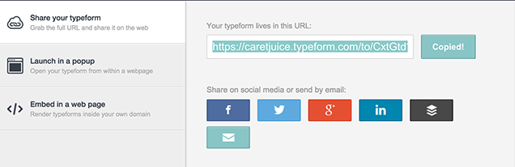
Paste the URL in your browser and add your email address in place of the xxxx.
For me, this URL
https://caretjuice.typeform.com/to/CxtGtd?email=xxxx
becomes this URL
https://caretjuice.typeform.com/to/CxtGtd?email=damon@caretjuice.com.
Load the page and fill out the form.
Trial accounts can test the form—just not use it with real customers.
Set Up Online Review Request
Typeform lets you add a few popular Zapier integrations during the Configure step. But we’re going to switch to using Zapier because it gives us more options.
Create or log in to your Zapier account and select Make a Zap.
Choose Typeform and New Entry as your trigger and MailChimp (or whichever tool you use for email) and New Subscriber as your action.
Scroll down and connect your Typeform account to Zapier.
The main step here is to find your Typeform API key and copy and paste it into Zapier. Once you know how to copy and paste an API key, you’ll be an integration pro (I told you that you won’t need to learn programming).
Switch to Typeform (it’s probably best to have each application open in a different tab or window).
To find your Typeform API key, select My Account from the drop down and scroll down to the Your API Key section. Copy and paste that long string of nonsense in to Zapier and hit Continue.
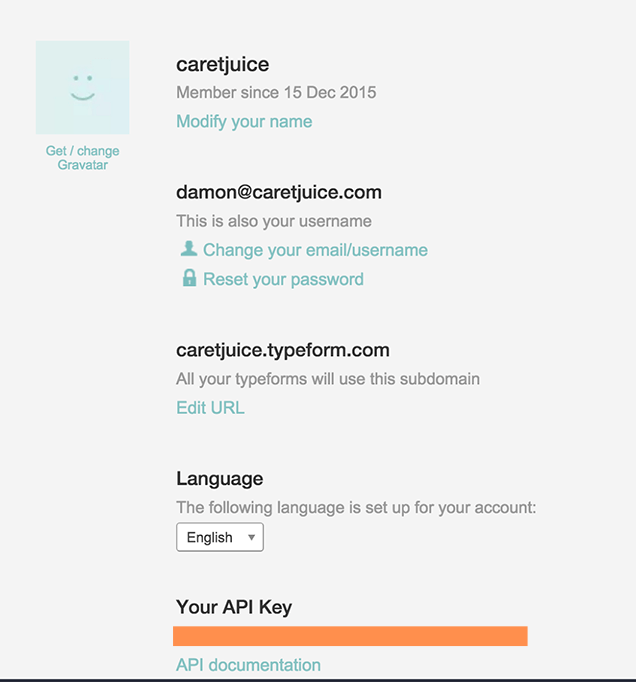
Now log in to MailChimp, or whatever email program that you use, select Lists and Create List.
Name this list Promoters. In net promoter score surveys, people who give you a score of nine or ten are called promoters while sevens and eights are Neutrals and zero to sixes are Detractors.
Here’s what I entered so you can get an idea of what to write.
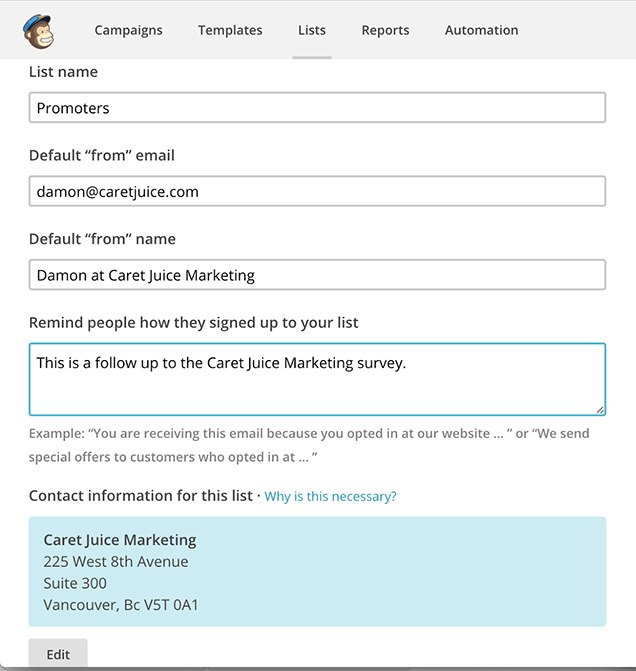
Now, go back to Zapier and connect your Zapier account to MailChimp.
You will get a popup asking you to sign in to your MailChimp account.
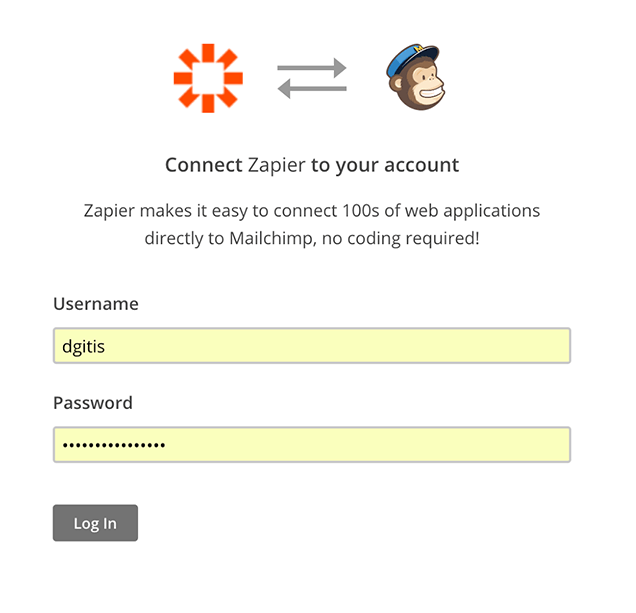
Log in and then select Continue.
Select the Typeform form that you used for the Net Promoter Score survey and Add a custom filter using the How Likely Are You to Recommend Us to a Friend as the field and Number Greater Than and 9 as the filter.
Your results should look something like this.
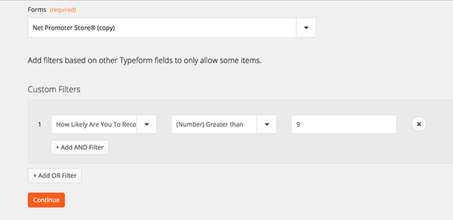
When you are comfortable with this, click Continue to set up the MailChimp end of the integration.
Your list will be Promoters.
Email will be the Typeform Email field.
And everything else can be left as is.
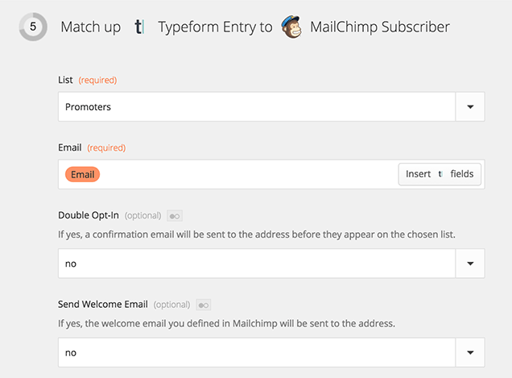
Scroll down and hit Continue and then proceed to Test the Zap.
When the test is done, name the Zap NPS Promoters and turn it on.
Send Review Request
Now we’re going to move back to MailChimp and ask for the review.
You need to be signed up to a paid MailChimp account to complete this step.
If you are only using MailChimp for one-to-one automation like this, then their pay-as-you-go options are probably most economical. If you are also using MailChimp for newsletters to a big list of subscribers, then the monthly options may be more suitable.
Let’s get to work.
While logged in to MailChimp, select Automation and Create Automation Workflow.
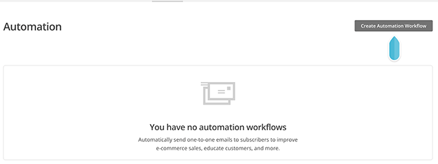
In the Choose a list to get started dropdown, select Promoters.
And then under Select a workflow, choose either Welcome Message or Welcome Series.
Welcome Message is for just a single email which is all you need if you’re just asking for a review. If you want to follow up with another message asking them to sign up for your newsletter or follow you on social media, then choose Welcome Series.
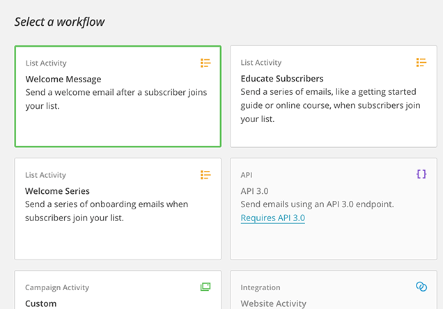
In the next screen, give your workflow a name and set up the sender.
You can see what I used in the screenshot.
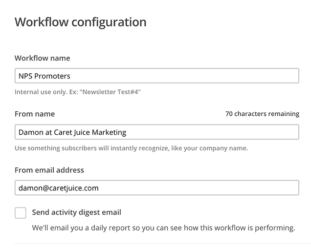
Otherwise, all of the default settings are fine. I added Google Analytics link tracking, but it’s not really needed since we are sending the visitors to other sites to review us. However, if you are doing a Welcome Series and will link back to your site, then you probably want to enable this.
Click Save And Exit at the top-right corner and select Automation to move to the next step.
Your automation is configured, but now you need to add an email message.
In the MailChimp Automation list under NPS Promoters click on the 0 emails link and select Add Email.

Email Contents
We’re not going to go over every step of creating the email here, but there are a few things that you should know before going ahead.
Obey the Law
The big one is that if you offer any payment or incentive, then the reviews will be considered paid reviews in many jurisdictions and that can put the request under truth in advertising laws.
That’s best avoided, so don’t offer anything for a review without getting legal advice (which this is not).
Where to Get Reviewed
The next important detail is choosing which sites that you want them to review you on and there are two things to consider here.
First, which sites are important. The way to do this is search Google and Bing using a query that you rank for or would like to rank for and see which review sites are already ranking. If a review site ranks well, then it is probably worth getting reviews on that site.
If you ran a hotel in downtown Halifax, then something like Downtown Halifax Hotels makes sense.
At the time of writing, Google is showing sites with Google Maps reviews, Trip Advisor and Expedia so those are probably good candidates.
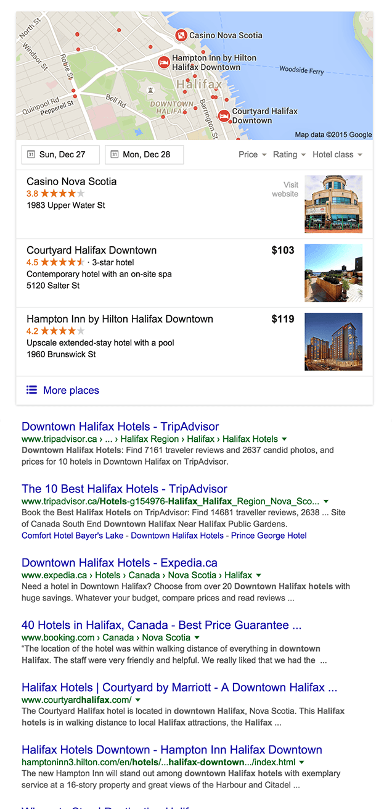
The other thing to consider is whether asking for reviews is against each sites terms of service.
Some sites encourage you to ask your customers to review you while it can cause problems on other sites. Read Asking for Reviews: Is it Against the Site’s TOS to learn which sites encourage you to ask for reviews, which sites discourage you and what you can do instead.
As for the contents of the email, the main thing is to not get carried away and give them too many options. Listing out eight potential review sites maximizes the chances that the recipient will be a member of one site, but long lists are intimidating and giving too many choices typically reduces response rates.
I wouldn’t give more than two options.
Asking for a Google review just got a bit more tricky. If you want to include Google, and there’s a good chance that you do, then check out this post on Asking for Google Reviews.
Finally, the last thing to consider is your email design. In particular, should you do a fancy HTML email or just go with plain text.
For one-to-one emails like this, I tend to prefer plain text. It’s easier and it feels like it should be more personalized even though it is automated.
Highly designed emails immediately put recipients on guard. I have another post on HTML vs plain text emails that goes deeper in to the subject if you need more convincing.
As far as the contents of the email go, it’s best to keep it simple and to the point.
Subject: Thanks for Your Feedback
Hi,
I just wanted to thank you for your feedback and invite you to share your experience working with us with others.
I’d really appreciate us if you left a review on Trip Advisor, Google Maps (you’ll need to click on the review button on the right), or any other place that you feel appropriate.
Thanks in advance.
Regards,
You
Starting the Automation
The best way to start the automation is in your CRM, project management system, or booking system presuming that they support some kind of triggered email.
The specifics of the trigger are unique to each product so we won’t go in deep.
Any system that can send email and where you marking projects as complete will work. You could trigger off of a change in customer or account status. You could even use Zapier with your accounting system to send when a final invoice gets paid.
Here’s the email I use.
Hi {{first_name}},
Now that we’ve finished some work for you, I wanted to ask you to give us a couple of minutes of feedback so that we can continue to get better at helping you.
I’d appreciate it if you filled out our two question survey. The first question will take all of 15 seconds and the second is optional.
Visit this page to complete the survey.
Thanks,
{{owner.name}}
The personalization tags (everything inside the curly braces) will change depending on where you are sending from.
The other important thing is to make sure you get the links right. In particular, make sure you include the email in the personalization tags.
For my Typeform-based NPS survey, the links look like this.
https://caretjuice.typeform.com/to/CxtGtd?email={{email}}
That last ?email={{email}} is important.
The first part, ?email=, is telling Typeform that we are passing the email variable that we told it to watch for when we were setting up the form.
The second part, {{email}}, is another personalization tag from my CRM telling the CRM to insert the email into this particular template. The exact format of the personalization tags varies by CRM, but curly braces are common.
Without the these two elements, the whole automation sequence breaks. This is one more reason why you want it to be as automated as possible; you can’t expect your employees to remember this all of the time if they’re sending manually.
If you were to trigger the automation from within the project management system, you’ll probably have to go through Zapier again and trigger the feedback email with the properly tagged link in a mail system like MailChimp possibly even combining that with CRM information pulled into MailChimp by Zapier.
The exact details of how to do it depend on the systems that you use, but hopefully by now you have some idea of how these can all work together .
Closing the (Optional) Loop
That’s the basic setup done.
But there’s one more thing that you might want to do and that is send your NPS survey results back to CRM so that you can run segmented NPS reports against things like different services or business divisions and see which teams are doing best and which areas of the business you need to focus on improving.
The first thing you will need to do is create fields to hold this data in your CRM.
You are going to need fields for the NPS Score (number field), NPS Comments (text field), and NPS Date (date field).
The date is really important because that is what will let you run reports on the score over the last quarter or year. If you were to use something like project completion date, you might run in to situations where you do several projects with a client who, for example, only fills out your first NPS survey but then contributes to your recent score.
With those three fields set up, fire up Zapier again and create a new Zap.
Link Typeform with a New Entry trigger to your CRM with an Update Contact action.
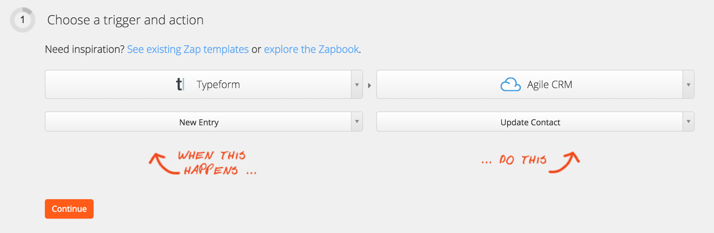
Go through the various connection steps (which will depend partly on your CRM) and then match the email from Typeform to your CRM email field to match your data to the right record.
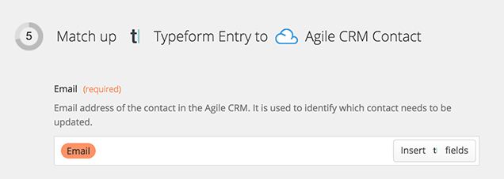
And then connect your NPS data to the new fields in CRM.
(I ran in to a bug at this step where Zapier couldn’t detect the NPS fields that we’d created and initialized with the first test submission. I fixed the problem by submitting my Typeform a second time and redoing this integration.)
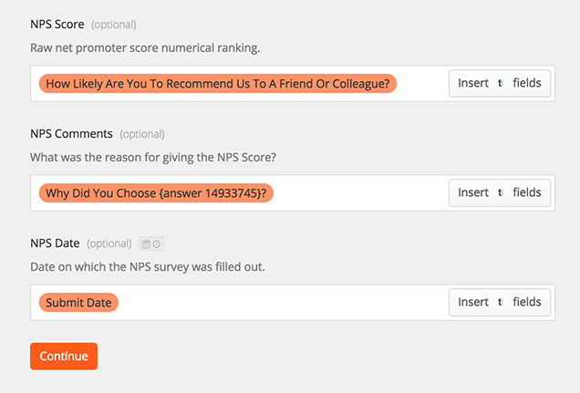
Test your integration, name it and you are done.
That was a long post, but it’s worth it. Now you are automatically asking your happiest customers for online reviews which will help you get more business while getting feedback that will help you analyze and improve your business.
Well done.
Getting reviews in Google helps improve your footprint in Google search results with review content and helps you get shown on Google Maps results. Reviews may even help improve your ranking.
There are a lot of good reasons to get reviews on Google proper. Google even encourages you to ask your customers for reviews, so you’re not going to run afoul of their terms of service running a Google review campaign. Just remember that offering payment or discounts in exchange for a review will likely require some form of disclosure to not run afoul of truth in advertising laws.
The problem is that Google has made it difficult to review your business.
There are some ways of currently linking directly to review forms, but these links often change and become invalid.
The best way of getting reviews is directly through the search results. This lets you give instructions that aren’t going to change greatly as long as Google continues to support reviews.
Reviews on Google Search Results
To get a review on Google Search Results, you’ll need to ask the customer to search for your site on Google or you can do the search yourself and give them a link to the search results page.
Then, you’ll need to instruct the customer to click on the Write a Review link in the business information box (also known as the Knowledge Panel results) on the right side of the search results.
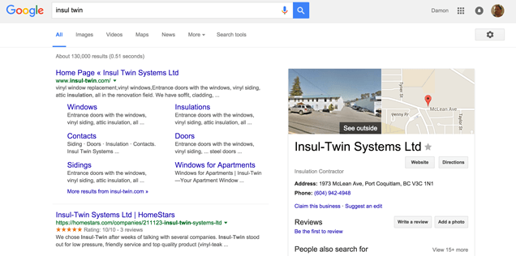
That’s a couple of extra steps, but it is fairly straightforward.
On mobile, it is a little more complicated with the review system hidden behind a white on blue disclosure caret signalling that more information is available.
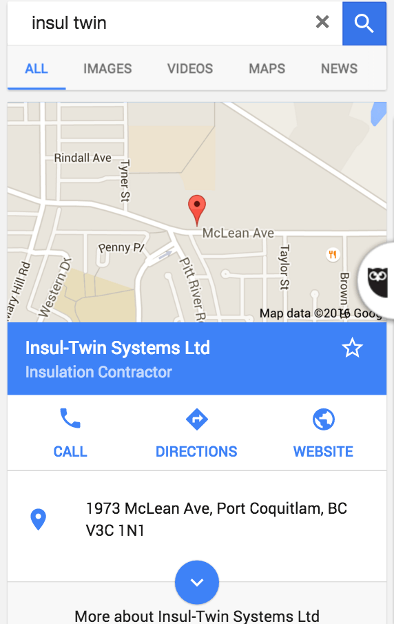
And then they’ll need to scroll down until they start seeing stars. No, really, check the screenshot below.
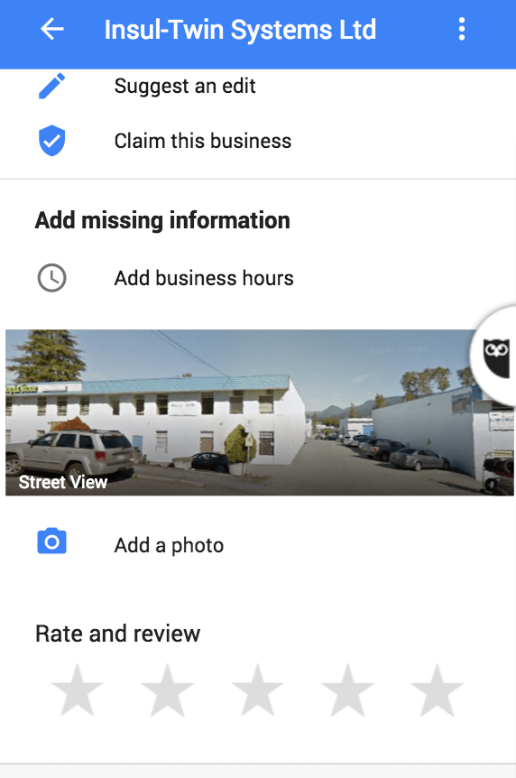
Unfortunately, that’s about the best that we can do for reviews right now. There are other solutions, but they break if you’re not signed in and Google’s been very flaky about supporting review URLs.
HTML emails are prettier than plain text. They require more expertise to produce than is seen in the average email user. As a result, business owners and managers are attracted to highly-designed HTML emails.
But this barrier to entry often means that HTML emails are the wrong choice for communicating with customers and leads.
When HTML is the Wrong Answer
The main problem with highly-designed emails is that they don’t look like the kind of email you get from friends and colleagues. They immediately put their recipients on guard for marketing messages and the quality of design and messaging needs to overcome this disadvantage.
This makes HTML a bad choice for drip emails. Typically drip emails are automated emails chains that take on the tone of a conversation between the prospect and someone at the company.
The email then needs to seem like it is coming from the company representative and any design beyond proper punctuation is going to undermine the purpose of the email.
When HTML is the Right Answer
A highly-designed HTML newsletter is a different situation. Even if your language is friendly and personal, the recipients expect that they are receiving a message from a company.
There’s another important consideration with respect to design and branding when planning an HTML email—and that’s content. In particular, how the content of the email reflects on the brand.
A strong and consistent visual brand brand combined with excellent content trains recipients to respond favorably to the brand.
Remember that people receiving your emails are going to be most strongly imprinted with your brand as they are exposed to it repeatedly.
Conversely, if you send emails with strongly branded visuals but poor content then you are going to train these same people to react unfavorably. Until they unsubscribe, but people stay subscribed to emails they don’t care for much too long.
Designing emails is a lot of work. Trust me, if you don’t know how much work they are, then you don’t want to find out. HTML emails are a nightmare.
But it is still relatively inexpensive for a manager or owner to spend on some nice email templates compared with the consistent on-going effort required to produce excellent content for those emails.
Until you’re in a position where you can consistently produce excellent content, spending on emails with a strong brand design is going to hurt your brand more than it will help.
Your brand is more than just design and logos. The content plays a part too.
I’ve seen too many strong brands send bad emails to stay silent on the subject.
Offering an incentive for reviews puts you under truth in advertising laws in most countries but asking for reviews without any incentive is usually safe. If you are unsure about your country, it is best to consult a lawyer.
But there’s another layer of possible restrictions than just the legal ones and that is each review site’s terms of service (TOS).
For sites like Yelp, they have no business without their reviews and so they put alot of effort in to protecting the integrity of reviews. That includes making asking for reviews against their terms of service.
Other companies, like Google, encourage the practice.
Here are some of the most popular review sites and their policies on asking for reviews.
Asking for Reviews is Against the TOS
These sites explicitly forbid asking for reviews.
Asking for Reviews is Acceptable
All of these sites either have a policy that explicitly allows review requests, have a policy that does not mention review requests, or encourage asking for reviews in blog posts and other non-official documents.
No Obvious Policy
These sites don’t have any easy to find documents covering terms of service for businesses.
- CitySearch
- Epinions
- Foursquare
- G2 Crowd
- HomeStars: They seem to want you to ask for reviews through premium services but it is not clear of asking for reviews is against the TOS for companies that don’t pay for premium.
- InsiderPages
- Judy’s Book
- Manta
- MerchantCircle
- Trusted Pros
These policies are subject to change. Please contact me or leave a comment and let me know when a listing needs an update.
Zapier is limited by how the different CRM systems make your data available to other application. Zapier can only react to changes that are broadcast by the CRM (and then only after you give it permission).
Hubspot CRM’s integration with Zapier, for example, is very flexible and intuitive with a New Contact Property Change trigger that lets you start a Zap any time any property you choose changes.
Most CRM systems don’t work with Zapier so intuitively.
Salesforce and Sugar CRM, to name some of the most popular, can only trigger Zaps when something new is added—like a New Contact or a New Note and they don’t have a rather useful New Value for Contact Property.
This would seem to limit what you can automate in Zapier as you collect more information on leads in your CRM system.
For example, when you change an Opportunity to a Customer there are a lot of things that you will probably want to do many of which should be automated. You might want to send out a survey, transfer data to your project management system, send your data to the support ticketing system, or trigger on-boarding emails.
If your CRM uses a drop-down field to track progress from Lead to Opportunity to Customer and it doesn’t have Hubspot-style triggers, you are going to have to get creative with how you trigger your Zap.
That is where these workarounds come in.
Simple On Update Workarounds
Any CRM system worth your time will have its own automation letting you move and manipulate data in a structured way.
The simplest way to work around the absence of an obvious On Update trigger for a Contact or similar entity is to combine the CRM’s own automation with different new CRM entity supported by Zapier.
I’m currently using Agile CRM which lets you tag Contacts and, sure enough, Zapier can trigger off of a New Tag.
So, for Agile CRM, I tag Contacts and Companies as #customers when the Status for an associated Opportunity is set to Won and then filter to only match my #customer tag.
Now I can automate all sorts of things for my new customers with the help of Zapier.
You can use Notes in Salesforce and Sugar CRM to accomplish the same thing. Just add a note that they Became a customer and then trigger and filter notes from Zapier.
More Complex Workarounds
You still have options even if your CRM doesn’t let you directly trigger Zapier. These workarounds will even work for systems that aren’t directly supported by Zapier.
You will want to look for a native or third-party integration between your CRM and Google Sheets or database.
Services like Data Everywhere let you pull data straight out of Salesforce and import them in to Google Sheets.
You might also be able to circumvent the CRM and connect Google Sheets straight to the database that powers the CRM. Typically, this option only applies if you are using an on-premise CRM where you control the hardware, and install the CRM and database.
Other CRM systems may have existing integrations to Google Sheets or databases like MySQL, PostgreSQL, or Microsoft SQL Server that Zapier can use.
Once your data is in Google Sheets, Zapier has an Updated Spreadsheet Row trigger that you can use.
The various flavors of SQL that Zapier supports only have new triggers, no Update Row. But, you can create a table to log updates to your database and then trigger off of that table to get the On Update effect.
Implementing the Workarounds
The specifics of each workaround vary by technology stack and are beyond the scope of this short post.
The techniques shared here should be enough to get Zapier to do what you need. And if they aren’t, you should probably consider running your business on better technology.
These techniques apply to the following recipes on the site: